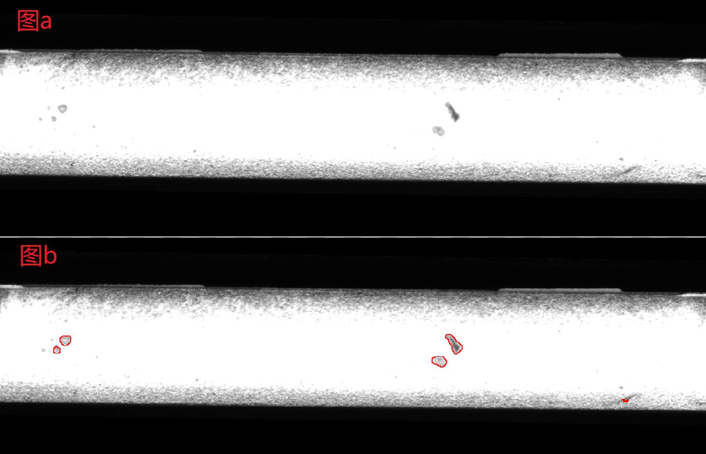
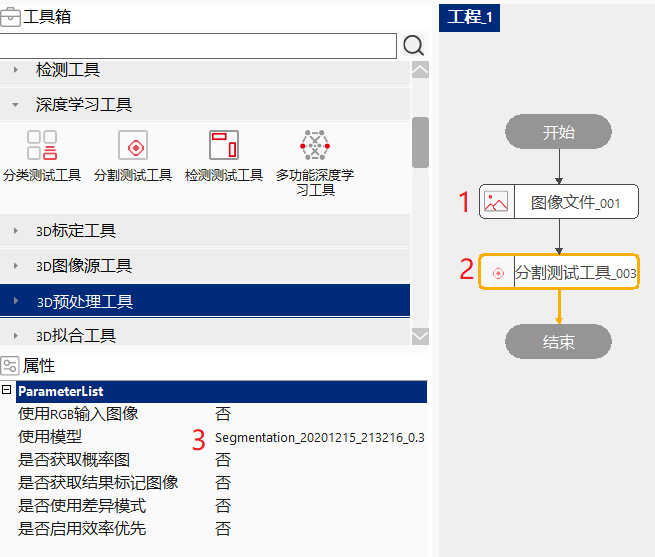
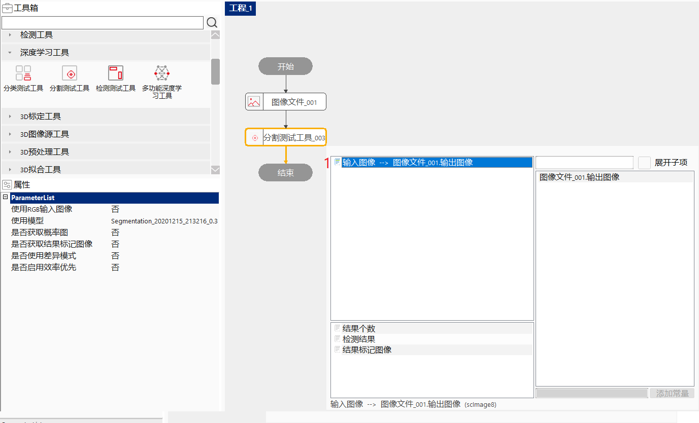
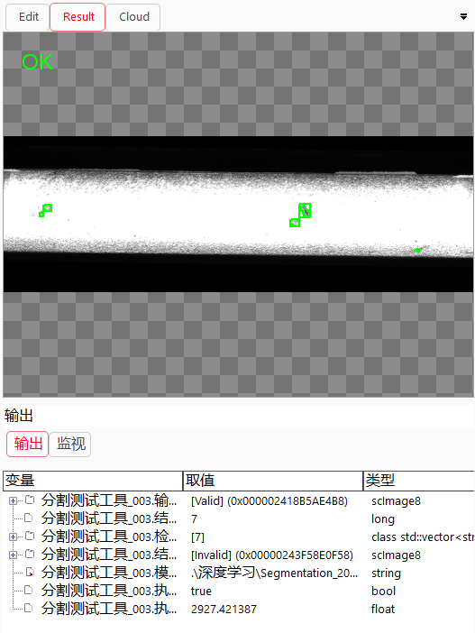
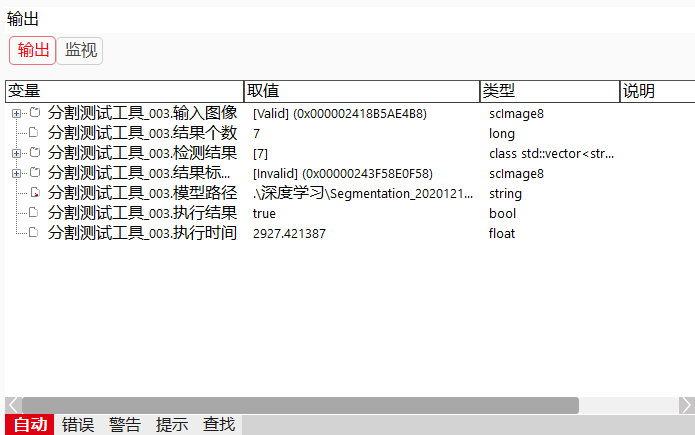

分割测试工具用于检测异常或者外观异常，该工具的输入为单张图像及训练好的网络模型，输出为分割结果图像和矩形结果或者多边形结果。
如下图，图a中的黑色片状斑点是要检测出来的目标，图b中的红色标记区域是分割测试工具检测的结果。

找出输入图像中可能为缺陷的像素点，如可用于检测LCD模组背光表面中点状、斑状、划伤以及灰尘等缺陷的尺寸。
模型训练：通过训练来学习输入图像特征到输出像素类别间的映射关系，这种映射关系是通过卷积神经网络来建立的。分割网络一般由下采样部分和上采样部分组成，下采样部分一般采用分类主干网络学习图像由低级到高级的特征，得到低分辨率的特征图，然后经过上采样层再逐步恢复到原始图像大小，输出与原图大小相同的高分辨图像结果。上采样部分和下采样部分均有许多参数，训练中会学习这些参数。
分割测试：实时图像被输入到网络中，网络会输出该图像每一个像素对应的类别，根据这些类别可以构造出结果图像。

双击“分割测试工具”，在弹出的数据链接对话框中，选择输入图像。



| 现象描述 | 解决方法 |
|---|---|
| 工具运行失败，提示“获取图像错误” | 检查输入图像是否设置，双击工具即可设置输入图像 |
| 工具运行失败，提示“调用深度学习算法错误” | 1、检查模型管理器中模型是否初始化成功；2、检查输入图像通道和宽高是否与模型相同 |
| 参数名称 | 参数说明 |
|---|---|
| 使用RGB输入图像 | “是”：数据链接中显示输入图像RGB参数；“否”：数据链接中显示输入图像参数 |
| 启用掩膜 | “是”：数据链接中显示输入掩膜图像参数；“否”：数据链接中不显示输入掩膜图像参数 |
| 使用模型 | 要使用的分割模型名称 |
| 是否获取概率图 | “是”：获取概率图；“否”：不获取概率图 |
| 是否获取结果标记图像 | “是”：获取结果标记图像；“否”：不获取结果标记图像 |
| 是否使用差异模式 | “是”：工具启用差异分割模式，数据链接中提供背景图像输入；“否”：工具启用普通分割模式，参数链中不提供背景图像输入 |
| 是否启用效率优先 | “是”：启用效率优先模式；“否”：不启用效率优先模式 |
| 参数名称 | 参数说明 |
|---|---|
| 输入图像 | 输入的检测图像 |
| 结果个数 | 检测结果个数 |
| 检测结果 | 检测结果的集合 |
| 结果类别 | 类别的索引 |
| 类别名称 | 类别的名称 |
| 结果矩形 | 检测出的目标的左上角点坐标，尺寸 |
| 结果置信度 | 暂无意义 |
| 结果面积 | 检测出的目标的面积 |
| 结果标记图像 | 检测获取的结果标记图像 |
| 模型路径 | 检测时使用的模型路径 |
| 执行结果 | 工具执行是否成功 |
| 执行时间 | 工具执行耗时 |
| 参数名称 | 参数说明 |
|---|---|
| 输入图像 | 显示输入的检测图像 |
| 结果矩形块 | 显示结果矩形 |
| 结果多边形 | 显示结果多边形 |
| 执行结果 | 显示工具的执行结果 |
参见“\Samples\分割测试工具.gvp”。